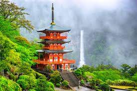
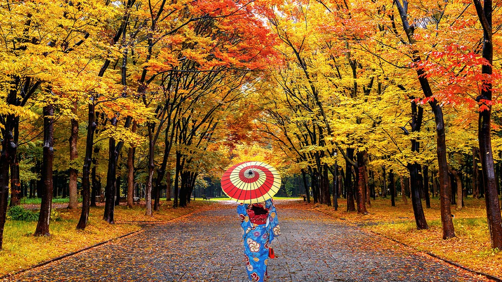

Japan is special to me because of its breathtaking views, rich culture, and unique atmosphere that blends tradition with modernity. Everywhere you go, from the bustling streets of Tokyo to the peaceful temples of Kyoto, there is something beautiful to admire. The landscapes, whether it’s cherry blossoms in spring, vibrant city lights at night, or serene mountains, always leave me in awe. Traveling there is an experience like no other, and just thinking about it fills me with excitement and inspiration.
The fastest way to reach Japan from the Philippines is by taking a direct flight from major airports like Manila (NAIA), Cebu (MCIA), or Clark (CRK) to destinations such as Tokyo (Narita or Haneda), Osaka (Kansai), Nagoya, or Fukuoka. Airlines like Philippine Airlines, Cebu Pacific, AirAsia, and Japan Airlines operate these routes, with a flight duration of around 4–5 hours. Filipino travelers must obtain a Japan tourist visa, which can be applied for through accredited travel agencies.